언제나 친구처럼 친근한 창업
점주 만족도 최상인 카페 브랜드 별다방
왜 ‘블루문’인가요?
합리적인 가격과 우수한 품질로 가맹 경쟁력 확립
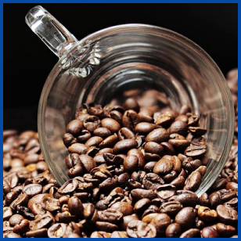
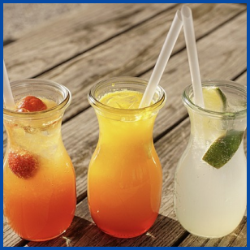
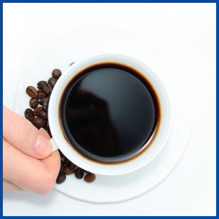
본사의 구매/물류 경쟁력을 통해 우수한 식자재를 빠르고 효율적으로 제공합니다.
스페셜티 원두를 베이스로 블렌딩한 수확 1년 미만 뉴크롭 아라비카 생두로 기본적인 커피 맛을 조절합니다.
국내산 청과 등 프리미엄 브랜드와 동일한 식자재를 본부에서 제공합니다.
가격에 비해 월등히 높은 품질을 유지하기 위한 본사의 노력으로, 낮은 단가에 대한 점주님들의 염려를 덜어드립니다.
소비 트렌드 반영한 신제품의
지속적인 개발&출시로 신규 고객 유치
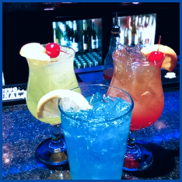
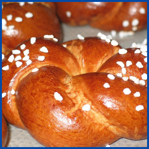
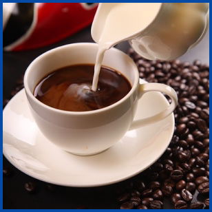
음료와 식자재 관련 트렌드를 빠르게 파악하고 분석하여 소비 니즈에 맞는 신메뉴를 출시합니다.
세분화된 분석을 통해 메뉴의 In&Out을 진행하며 매년 시즌에 맞는 빽다방만의 메뉴를 구성하여 판매합니다.
프랜차이즈에 최적화된
자체 시스템을 통해 체계적인 물류 운영
카페 프랜차이즈에 최적화된 물류 시스템을 통해 발주와 배송이 원활하게 진행됩니다.
체계적인 물류 인프라와 컨택 센터를 구축해 식자재에 대한 점주님의 클레임이 없도록 합니다.
운영방안이나 건의사항 등 모든 주제를 두고 본사와 기탄없이 소통하는 분위기가 형성돼 점주 만족도가 높습니다.
정기/비정기 점주 간담회와 소모임을 통해 운영 관련 고충을 듣고,즉각적인 해결 방안을 수립합니다.
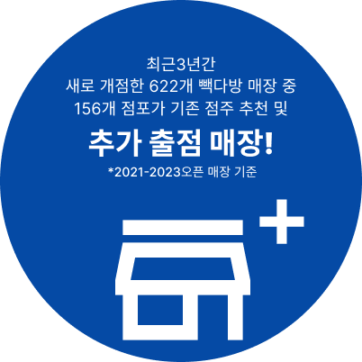
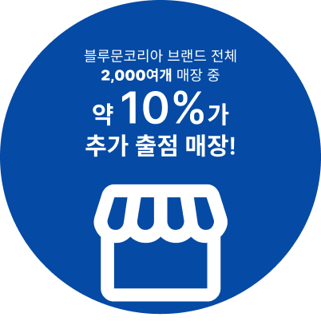
더본코리아 가맹점 중에는 점주 한 분이 여러 매장을 운영하는 다출점 점포가 많습니다.
높은 다출점율은 본사의 체계적인 운영에 대한 점주님들의 만족과 신뢰를 의미합니다.
쉽고 빠른 창업이 가능한 빽다방은 더본코리아의 대표적인 다출점 브랜드입니다.
전용 멤버십으로 편의성 도모,고객 충성도 제고, 고객 이탈 방지!
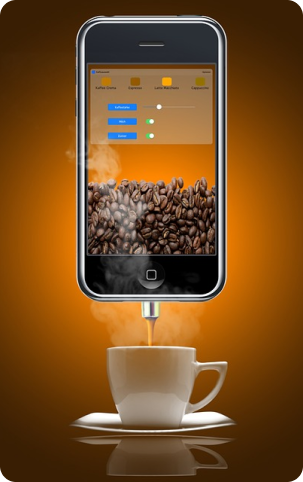
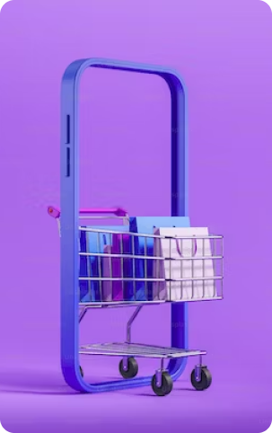
카페 프랜차이즈에 최적화된 물류 시스템을 통해 발주와 배송이 원활하게 진행됩니다.
체계적인 물류 인프라와 컨택 센터를 구축해 식자재에 대한 점주님의 클레임이 없도록 합니다.
다양한 온/오프라인 마케팅으로 신규 고객 창출
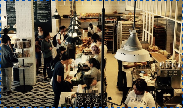
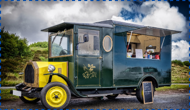
가맹점에 줄을 세울 수 있는 자체 행사, 대형 채널과 함께하는 제휴 행사 및 본사가 주최하는 각종 온라인 행사가 연간 진행됩니다.
SNS 공식계정을 통해 각종 행사와 이벤트 소식을 알리고,유튜브 광고 등을 집행하여 브랜드 인지도를 높입니다.
전용 멤버십으로 편의성 도모,고객 충성도 제고, 고객 이탈 방지!
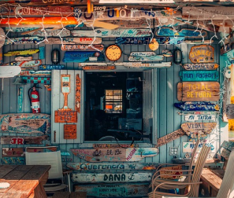
테이크아웃 전문 매장
매장이 들어설 상권 및 업장 규모를 파악하고 분석해 가장 적절한 형태로 출점을 지원합니다.
테이크아웃 전용 매장과 키오스크 및 QR(테이블오더)을 활용한 비대면 매장 출점도 가능합니다.
블루문의 다양한 출점모델
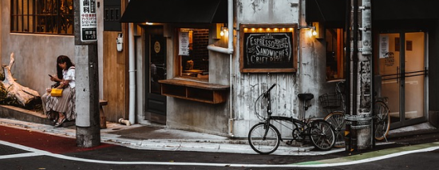
별다방 연구소 매장
매장에서 직접 반죽한 고퀄리티 베이커리 제품을 판매하며,
메뉴 폐기율이 낮고 객단가가 높아 운영에 용이합니다.
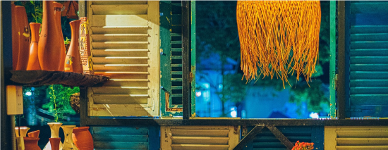
별다방 드라이브스루 매장
여행지 등 자동차 이용 고객이 많은 상권 타입
※ 빽다방 빵연구소 출점 문의는 하단 창업문의에서 ‘빽다방 빵연구소’ 선택후 문의신청 주세요!
※ 빽다방 빵연구소는 후보점인근 도보 500M이내 개인 혹은 중소가 운영하는 동종업이 있을 시
출점 불가합니다. (동반성장위 규제사항)